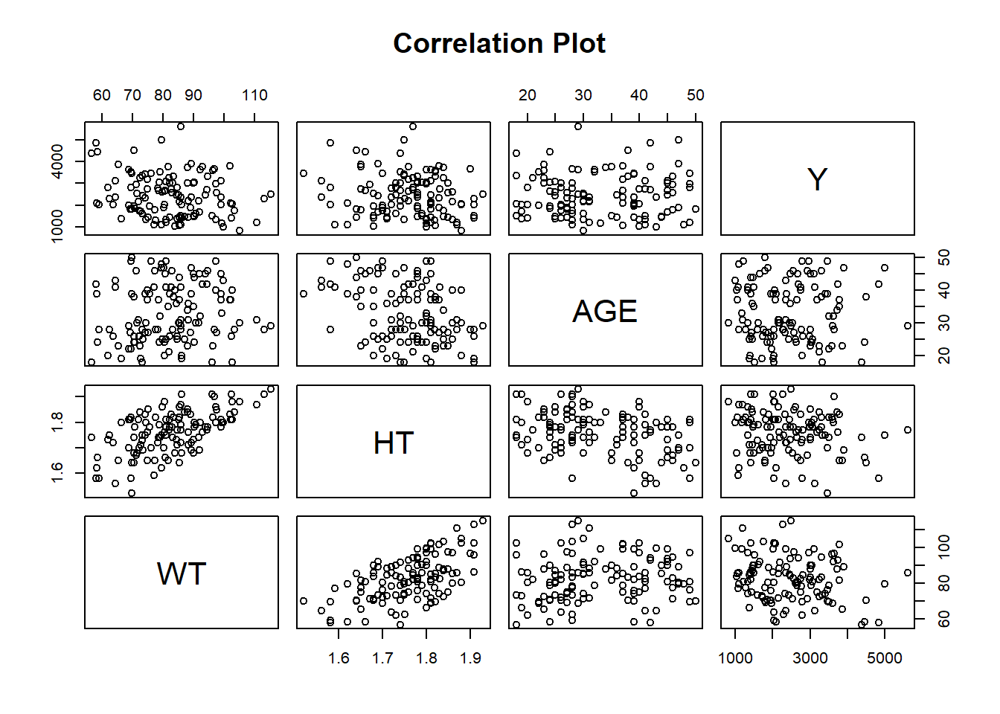
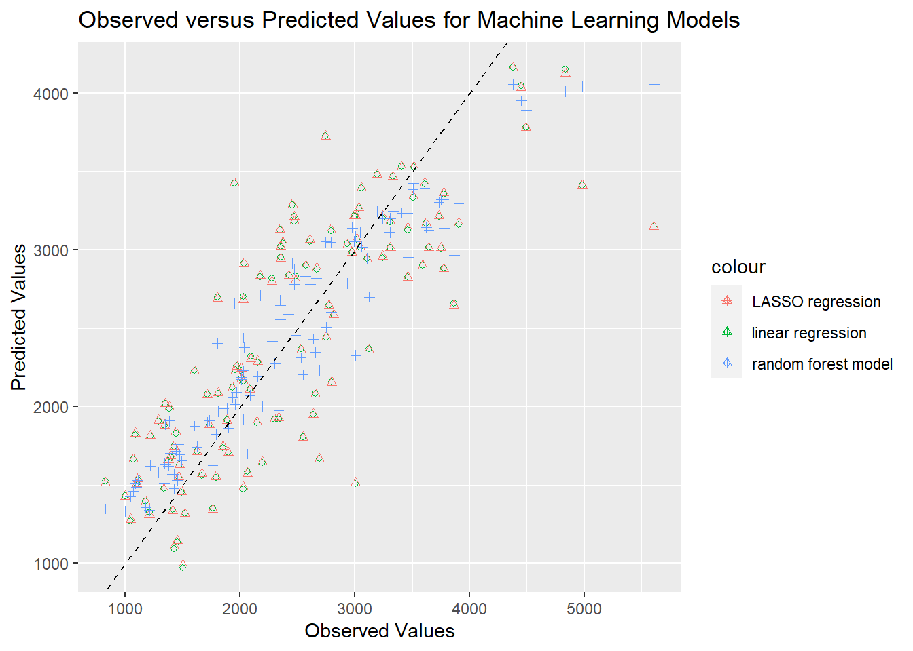
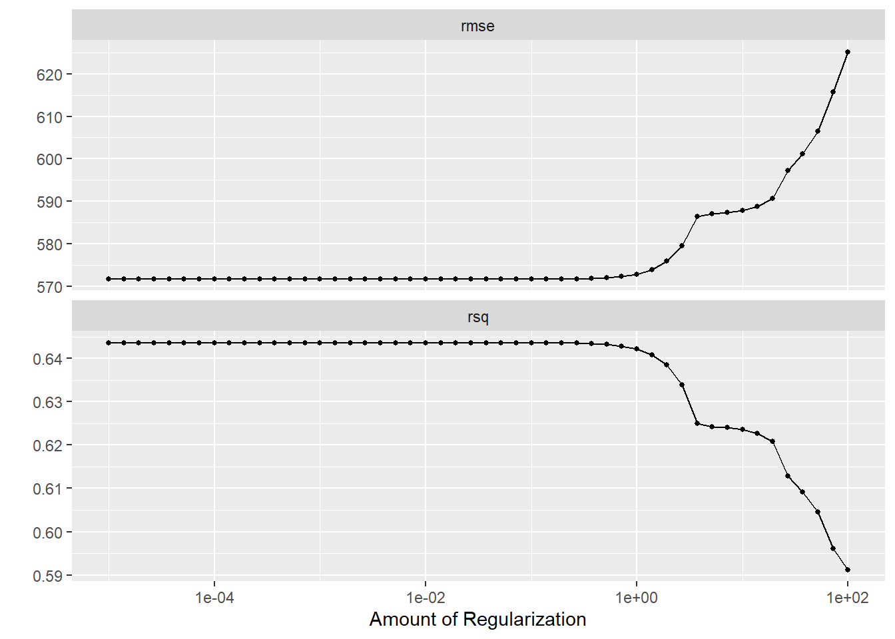
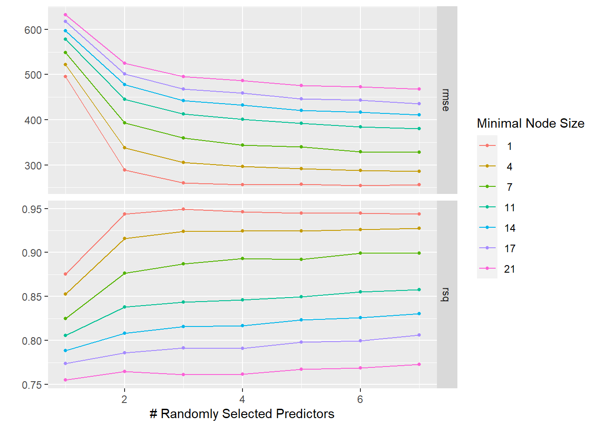
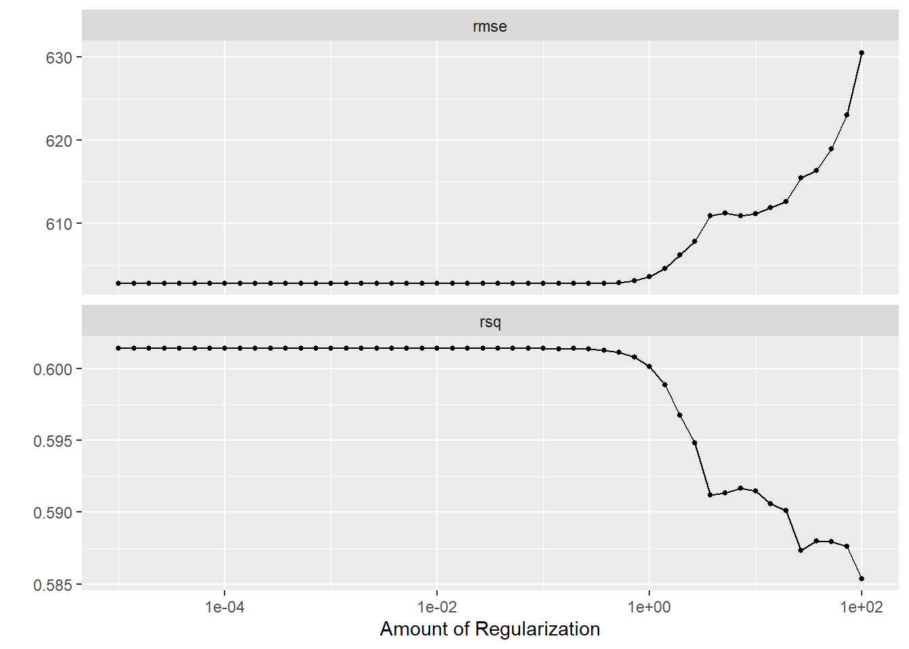
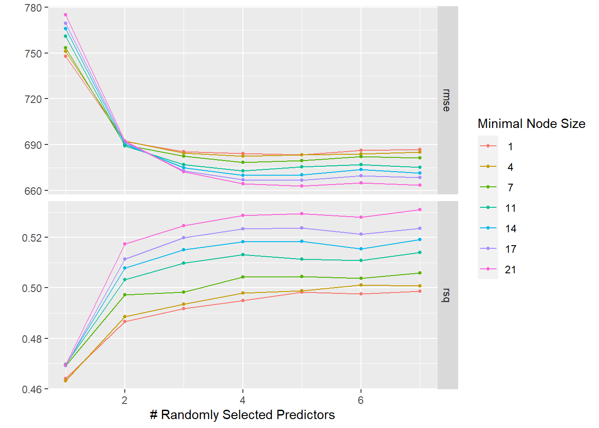

The previous analysis excluded SEX, but we want to include this variable for this portion of analysis. We also have two odd levels in the factor variable, race, which are called 7 and 88. To discover how to handle this variable we must explore to find what these levels stand for. In my previous exploratory analysis, I noticed that the races 7 and 88 were different depending on age (where 7 included those less than 40 years of age and 88 included those older than 40 years of age). For this reason I will stratify race by age. I will then stratify race by sex to determine if there are any further differences that I might be missing. Sex was shown to be associated with height and body weight in the exploratory analysis and I do not know an arbitrary cutoff for this variables, so I will not use them to stratify.
# Stratify RACE by AGE# Define age groups of under 40 and over 40data$AGEcat <-ifelse(data$AGE <=40, "<=40", ">40")# Use by() to stratify the race variable by age and find the summaryRaceAge_summary <-by(data$RACE, data$AGEcat, summary)# Printing the summary statisticsRaceAge_summary
data <-subset(data, select =-AGEcat) # remove the AGEcat variable from the original data frame# Stratify RACE by SEXRaceSex_summary <-by(data$RACE, data$SEX, summary)RaceSex_summary
The summary statistics (counts of RACE for each AGE category and SEX) show that 7 and 88 are in two different age categories. This may indicate that they represent the same race, but divided by those who are <=40 years old and those who are >40 years old. Because of this, we will group the factor levels (7 and 88) or race, together.
# Combining RACE levels 7 and 88data$RACE <-factor(ifelse(data$RACE %in%c(7, 88), 3, data$RACE)) # combine levels 7 and 88 of the factor variable RACE into one level called 3 using the ifelse() functionstr(data$RACE) # check the data structure to ensure that they were combined
# Correlation Plotpairs(data[, c("WT", "HT", "AGE", "Y")], # use pairs() to find pairwise correlation for continuous variableslabels =c("WT", "HT", "AGE", "Y"), # specify the labels for each variablemain ="Correlation Plot", # Title of the plotrow1attop =FALSE, # Default behavior for the direction of the diagonalgap =1, # Distance between subplotscex.labels =NULL,# Size of the diagonal text (default)font.labels =1) # Font style of the diagonal text

# correlation coefficientsmatrix <-cor(data[, c("WT", "HT", "AGE", "Y")]) # use cor() function to make a correlation matrix for the specified continuousprint(matrix) # Print the correlation matrix
WT HT AGE Y
WT 1.0000000 0.5997505 0.11967399 -0.21287194
HT 0.5997505 1.0000000 -0.35185806 -0.15832972
AGE 0.1196740 -0.3518581 1.00000000 0.01256372
Y -0.2128719 -0.1583297 0.01256372 1.00000000
As shown by the correlation matrix and plot, there is a moderate correlation between weight and height but no other continuous variables show correlation. Because of this, we want to combine these two correlated variables for weight and height into one variable for body mass index (BMI). BMI is calculated by dividing a person’s weight in kg by height in meters squared. We do not know the units for height or weight used int eh study so we will look at the data to try and figure this out.
# Summary of the datasummary(data)
Y DOSE AGE SEX RACE
Min. : 826.4 Min. :25.00 Min. :18.00 1:104 1:74
1st Qu.:1700.5 1st Qu.:25.00 1st Qu.:26.00 2: 16 2:36
Median :2349.1 Median :37.50 Median :31.00 3:10
Mean :2445.4 Mean :36.46 Mean :33.00
3rd Qu.:3050.2 3rd Qu.:50.00 3rd Qu.:40.25
Max. :5606.6 Max. :50.00 Max. :50.00
WT HT
Min. : 56.60 Min. :1.520
1st Qu.: 73.17 1st Qu.:1.700
Median : 82.10 Median :1.770
Mean : 82.55 Mean :1.759
3rd Qu.: 90.10 3rd Qu.:1.813
Max. :115.30 Max. :1.930
# It looks like height is in meters and weight is in kg in this case# Calculate BMIdata <-mutate(data, BMI = WT/(HT^2)) # use mutate() from dpylr to add a new variable to the data frame using preexisting columnsstr(data$BMI) # check structure of the BMI variable
num [1:120] 30.1 26 21.9 28.4 26.4 ...
Modeling
I will produce three machine learning models of this cleaned data. The first will be a linear regression model, similar to the one done for the model fitting exercise. Next, I will do a LASSO regression and finally, a random forest (RF) model. Instead of splitting the data into training and testing groups, we will perform cross validation (CV) at the end to check model performance. ## First Fit
set.seed(rngseed) # set seed for reproducibility# Linear Regressionglm_recipe <-recipe(Y ~ ., data = data) # specify the recipe by putting the formula for the linear model with all the predictorsglm_model <-linear_reg() %>%# make object for the model functionset_engine("lm") %>%# Use linear regression engine lmset_mode("regression") # and also, set to regression modeglm_workflow <-workflow() %>%# create a workflow add_model(glm_model) %>%# apply linear regression modeladd_recipe(glm_recipe) # then, apply the recipeglm_fit <- glm_workflow %>%# add the workflow to the fitfit(data = data) # fit to the whole data settidy(glm_fit) # produce tibble to organize the resulting linear regression fit
# LASSO Regression## I used a tidytuesday example and stack overflow to create this LASSO regressionlasso_rec <-recipe(Y ~ ., data = data) %>%# create recipe containing all predictorsstep_zv(all_numeric(), -all_outcomes()) %>%# removes non-zero variance variables of predictors (not outcomes)step_scale(all_numeric(), -all_outcomes(), -all_nominal()) %>%# regularizes numerical variablesstep_dummy(all_nominal()) # makes factor variables dummy variableslasso_prep <- lasso_rec %>%prep() # ensures that strings are not converted into factors, call prep to prepare the recipe for fittinglasso_spec <-linear_reg(penalty =0.1, mixture =1) %>%# gives a L1 penalty to the variablesset_engine("glmnet") # set engine for LASSO regressionlasso_wf <-workflow() %>%add_recipe(lasso_rec) # apply the recipe to a lasso workflowlasso_fit <- lasso_wf %>%# fit the model using the specs that were specified aboveadd_model(lasso_spec) %>%fit(data = data) # fit to all datalasso_fit %>%extract_fit_parsnip() %>%# extract the fit and use tidy() to produce a tibbletidy()
# Random Forest (RF) Modelrf_rec <-recipe( Y ~ ., data = data) # use full model as recipe for the random forest modelrf_model <-rand_forest()%>%# use rand_forest() to make a random forest modelset_engine("ranger", seed = rngseed)%>%# set engine to ranger with the same seed for reproducibilityset_mode("regression")%>%# set to regression modetranslate()rf_workflow <-workflow() %>%# create workflow for rf modeladd_recipe(rf_rec)%>%# apply recipeadd_model(rf_model) # apply modelrf_fit <- rf_workflow%>%fit(data = data) # use the workflow to fit the rf model to the datarf_fit # print fit (there is no tidy method for ranger)
══ Workflow [trained] ══════════════════════════════════════════════════════════
Preprocessor: Recipe
Model: rand_forest()
── Preprocessor ────────────────────────────────────────────────────────────────
0 Recipe Steps
── Model ───────────────────────────────────────────────────────────────────────
Ranger result
Call:
ranger::ranger(x = maybe_data_frame(x), y = y, seed = ~rngseed, num.threads = 1, verbose = FALSE)
Type: Regression
Number of trees: 500
Sample size: 120
Number of independent variables: 7
Mtry: 2
Target node size: 5
Variable importance mode: none
Splitrule: variance
OOB prediction error (MSE): 497625.2
R squared (OOB): 0.4618768
Predictions
Now that I have fit a linear regression, LASSO regression, and random forest model, I will use each model to make predictions and find the RMSE for each model.
# Making Predictions and Computing RMSE## Linear regressionglm_aug <-augment(glm_fit, data) # add glm predictions to an augmented data frameglm_rmse <-rmse(data = glm_aug, # compute rmse based on Y expected values and .pred as the estimatetruth = Y,estimate = .pred)print(glm_rmse)
# A tibble: 1 × 3
.metric .estimator .estimate
<chr> <chr> <dbl>
1 rmse standard 572.
# A tibble: 1 × 3
.metric .estimator .estimate
<chr> <chr> <dbl>
1 rmse standard 362.
We see that the RMSE is very similar for the linear regression and LASSO regression (approx. 572), but the RMSE for the random forest model is much lower (approx. 362). To visualize why this may be, we will produce a plot of the outcome (Y) and predicted values to compare each model.
# Predicted versus Observed plot## Add data to one data frameplot_data <-data.frame(observed =c(data$Y), # Add observed value from original data frameglm_predictions =c(glm_aug$.pred), # add predicted values from each modellasso_predictions =c(lasso_aug$.pred), rf_predictions =c(rf_aug$.pred), model =rep(c("linear regression", "LASSO regression", "random forest model"), each =nrow(data))) # add labels to indicate the modelplot_data
observed glm_predictions lasso_predictions rf_predictions
1 2690.52 1666.292 1665.4951 2232.979
2 2638.81 1951.072 1951.1483 2430.801
3 2149.61 1895.868 1901.2942 1939.346
4 1788.89 1548.332 1553.1011 1822.306
5 3126.37 2369.123 2358.0298 2698.249
6 2336.89 1920.740 1928.6044 1973.672
7 3007.20 1509.739 1512.5443 2325.846
8 2795.65 2155.512 2154.3831 2599.931
9 3865.79 2657.661 2643.6228 2965.019
10 1761.62 1352.351 1344.5900 1625.177
11 2548.98 1805.393 1804.1869 2202.179
12 1967.61 2261.963 2254.6162 2090.828
13 2352.78 2951.773 2941.5741 2644.115
14 1800.79 2695.525 2690.2208 2401.978
15 2009.16 2231.317 2243.1548 2172.702
16 2815.26 2582.599 2583.4456 2679.755
17 2008.52 2178.308 2174.3373 2186.277
18 2933.99 3036.928 3028.9858 2785.677
19 2748.86 2441.214 2444.1440 2504.647
20 2154.56 2282.657 2287.9142 2191.959
21 3462.59 2828.334 2824.4177 2953.546
22 2771.69 2644.227 2643.7206 2680.456
23 2423.89 2838.265 2834.5916 2588.795
24 2084.87 2114.951 2110.2089 2070.711
25 4984.57 3410.684 3409.2691 4038.573
26 2572.45 2900.071 2896.7632 2832.323
27 2667.02 2874.575 2883.4645 2819.265
28 3004.21 3216.289 3218.0471 3082.765
29 4834.65 4147.945 4122.1679 4007.517
30 5606.58 3146.586 3148.0269 4054.842
31 3408.61 3530.487 3528.5769 3234.727
32 4493.01 3782.900 3775.9116 3892.084
33 3513.71 3527.580 3527.0090 3423.537
34 3905.93 3161.522 3169.9729 3293.157
35 3644.37 3014.873 3012.9266 3124.347
36 2746.20 3725.436 3723.5112 3050.665
37 1424.00 1092.137 1110.2174 1476.492
38 1108.17 1528.406 1540.3575 1529.187
39 3104.70 2944.451 2940.3125 2946.628
40 2177.20 2828.179 2836.5662 2706.864
41 2193.20 1641.498 1644.6901 2004.379
42 1810.59 2081.464 2087.8279 1967.067
43 1666.10 1561.426 1571.5568 1766.751
44 2027.39 1472.311 1485.0501 1915.456
45 2345.50 3126.133 3130.0769 2679.027
46 3310.20 3011.772 3010.9532 3199.220
47 3777.20 2884.511 2878.4614 3136.643
48 2063.43 1585.373 1574.7557 1698.501
49 4378.37 4164.254 4157.3127 4054.339
50 1853.91 1737.577 1745.8276 1987.378
51 3774.00 3354.137 3362.0251 3318.810
52 1625.46 1713.675 1712.9939 1742.316
53 1044.07 1271.445 1280.7092 1426.413
54 1423.70 1745.834 1747.0350 1570.035
55 3037.39 3264.513 3267.4854 3043.601
56 2610.00 3052.354 3062.8884 2781.194
57 3193.98 3480.765 3479.9722 3243.305
58 1602.63 2229.188 2225.4512 1875.574
59 2457.68 3285.181 3286.8230 2909.370
60 1474.60 1628.706 1627.3779 1694.544
61 997.89 1431.588 1427.4710 1333.704
62 4451.84 4047.461 4033.0282 3949.126
63 3507.10 3331.287 3341.3703 3386.129
64 3332.16 3467.620 3467.6341 3246.643
65 3733.10 3212.679 3214.1497 3301.496
66 1886.48 1912.787 1911.9204 1990.796
67 1175.69 1396.002 1393.0632 1358.239
68 1517.24 1317.045 1317.1867 1844.712
69 2036.20 2915.041 2912.1504 2377.633
70 2532.10 2368.507 2361.6117 2310.721
71 1392.78 1676.221 1685.1243 1702.797
72 2372.70 3041.284 3046.3185 2774.527
73 3239.66 3202.876 3215.3041 3214.149
74 1935.24 2122.539 2119.2763 2058.760
75 1344.35 1878.455 1881.7958 1634.292
76 1411.57 1344.244 1335.8715 1567.756
77 1712.00 2077.625 2074.0122 1901.206
78 2978.20 2986.220 2982.9972 3139.730
79 1948.80 3423.391 3424.1980 2655.798
80 1346.62 2019.387 2017.6645 1885.764
81 1380.61 1989.205 1995.6376 1909.081
82 1214.97 1812.490 1813.0534 1622.279
83 3622.80 3168.300 3167.6889 3141.464
84 3751.90 3009.375 3010.7492 3320.045
85 2092.89 2321.030 2303.7623 2559.630
86 3458.43 3123.946 3137.0371 3232.131
87 2789.70 3120.812 3127.2381 3047.259
88 2303.58 1917.330 1916.9827 2275.298
89 2030.50 2162.061 2159.5244 2229.379
90 1439.57 1826.728 1837.5538 1717.227
91 2471.60 3181.973 3180.8807 2877.682
92 1097.60 1503.438 1509.1215 1486.931
93 1464.29 1547.889 1550.2984 1758.278
94 3243.29 2949.707 2958.3391 3196.397
95 2654.70 2081.760 2079.6383 2346.054
96 3609.33 3418.077 3425.6590 3391.887
97 3060.70 3392.820 3394.4500 3017.696
98 1374.48 1656.248 1660.0135 1621.747
99 1451.50 1135.461 1144.7828 1530.642
100 1503.55 973.785 989.8539 1494.118
101 2027.60 2702.367 2678.7908 2437.125
102 3046.72 3015.803 3016.9165 3108.418
103 2485.00 2830.571 2806.4608 2455.151
104 1731.80 1883.050 1884.5676 1911.827
105 1958.27 2232.296 2225.3000 2012.805
106 2996.40 3213.626 3215.4839 3053.526
107 1288.64 1907.697 1912.3864 1578.546
108 2353.40 3020.431 3019.9432 2552.630
109 3016.30 3063.343 3066.8408 3082.212
110 3306.15 3176.953 3179.4228 3111.106
111 826.43 1525.419 1513.5919 1348.316
112 1338.20 1478.099 1472.6168 1513.226
113 1490.93 1452.322 1458.1048 1654.928
114 1067.56 1661.808 1662.6232 1460.740
115 2472.90 3210.084 3211.9609 2781.050
116 1085.93 1819.709 1830.0230 1511.110
117 2278.97 2816.581 2796.2701 2414.965
118 1898.00 1704.732 1704.9722 1863.288
119 1208.74 1325.510 1309.4964 1337.491
120 3593.55 2899.403 2897.9885 3200.940
121 2690.52 1666.292 1665.4951 2232.979
122 2638.81 1951.072 1951.1483 2430.801
123 2149.61 1895.868 1901.2942 1939.346
124 1788.89 1548.332 1553.1011 1822.306
125 3126.37 2369.123 2358.0298 2698.249
126 2336.89 1920.740 1928.6044 1973.672
127 3007.20 1509.739 1512.5443 2325.846
128 2795.65 2155.512 2154.3831 2599.931
129 3865.79 2657.661 2643.6228 2965.019
130 1761.62 1352.351 1344.5900 1625.177
131 2548.98 1805.393 1804.1869 2202.179
132 1967.61 2261.963 2254.6162 2090.828
133 2352.78 2951.773 2941.5741 2644.115
134 1800.79 2695.525 2690.2208 2401.978
135 2009.16 2231.317 2243.1548 2172.702
136 2815.26 2582.599 2583.4456 2679.755
137 2008.52 2178.308 2174.3373 2186.277
138 2933.99 3036.928 3028.9858 2785.677
139 2748.86 2441.214 2444.1440 2504.647
140 2154.56 2282.657 2287.9142 2191.959
141 3462.59 2828.334 2824.4177 2953.546
142 2771.69 2644.227 2643.7206 2680.456
143 2423.89 2838.265 2834.5916 2588.795
144 2084.87 2114.951 2110.2089 2070.711
145 4984.57 3410.684 3409.2691 4038.573
146 2572.45 2900.071 2896.7632 2832.323
147 2667.02 2874.575 2883.4645 2819.265
148 3004.21 3216.289 3218.0471 3082.765
149 4834.65 4147.945 4122.1679 4007.517
150 5606.58 3146.586 3148.0269 4054.842
151 3408.61 3530.487 3528.5769 3234.727
152 4493.01 3782.900 3775.9116 3892.084
153 3513.71 3527.580 3527.0090 3423.537
154 3905.93 3161.522 3169.9729 3293.157
155 3644.37 3014.873 3012.9266 3124.347
156 2746.20 3725.436 3723.5112 3050.665
157 1424.00 1092.137 1110.2174 1476.492
158 1108.17 1528.406 1540.3575 1529.187
159 3104.70 2944.451 2940.3125 2946.628
160 2177.20 2828.179 2836.5662 2706.864
161 2193.20 1641.498 1644.6901 2004.379
162 1810.59 2081.464 2087.8279 1967.067
163 1666.10 1561.426 1571.5568 1766.751
164 2027.39 1472.311 1485.0501 1915.456
165 2345.50 3126.133 3130.0769 2679.027
166 3310.20 3011.772 3010.9532 3199.220
167 3777.20 2884.511 2878.4614 3136.643
168 2063.43 1585.373 1574.7557 1698.501
169 4378.37 4164.254 4157.3127 4054.339
170 1853.91 1737.577 1745.8276 1987.378
171 3774.00 3354.137 3362.0251 3318.810
172 1625.46 1713.675 1712.9939 1742.316
173 1044.07 1271.445 1280.7092 1426.413
174 1423.70 1745.834 1747.0350 1570.035
175 3037.39 3264.513 3267.4854 3043.601
176 2610.00 3052.354 3062.8884 2781.194
177 3193.98 3480.765 3479.9722 3243.305
178 1602.63 2229.188 2225.4512 1875.574
179 2457.68 3285.181 3286.8230 2909.370
180 1474.60 1628.706 1627.3779 1694.544
181 997.89 1431.588 1427.4710 1333.704
182 4451.84 4047.461 4033.0282 3949.126
183 3507.10 3331.287 3341.3703 3386.129
184 3332.16 3467.620 3467.6341 3246.643
185 3733.10 3212.679 3214.1497 3301.496
186 1886.48 1912.787 1911.9204 1990.796
187 1175.69 1396.002 1393.0632 1358.239
188 1517.24 1317.045 1317.1867 1844.712
189 2036.20 2915.041 2912.1504 2377.633
190 2532.10 2368.507 2361.6117 2310.721
191 1392.78 1676.221 1685.1243 1702.797
192 2372.70 3041.284 3046.3185 2774.527
193 3239.66 3202.876 3215.3041 3214.149
194 1935.24 2122.539 2119.2763 2058.760
195 1344.35 1878.455 1881.7958 1634.292
196 1411.57 1344.244 1335.8715 1567.756
197 1712.00 2077.625 2074.0122 1901.206
198 2978.20 2986.220 2982.9972 3139.730
199 1948.80 3423.391 3424.1980 2655.798
200 1346.62 2019.387 2017.6645 1885.764
201 1380.61 1989.205 1995.6376 1909.081
202 1214.97 1812.490 1813.0534 1622.279
203 3622.80 3168.300 3167.6889 3141.464
204 3751.90 3009.375 3010.7492 3320.045
205 2092.89 2321.030 2303.7623 2559.630
206 3458.43 3123.946 3137.0371 3232.131
207 2789.70 3120.812 3127.2381 3047.259
208 2303.58 1917.330 1916.9827 2275.298
209 2030.50 2162.061 2159.5244 2229.379
210 1439.57 1826.728 1837.5538 1717.227
211 2471.60 3181.973 3180.8807 2877.682
212 1097.60 1503.438 1509.1215 1486.931
213 1464.29 1547.889 1550.2984 1758.278
214 3243.29 2949.707 2958.3391 3196.397
215 2654.70 2081.760 2079.6383 2346.054
216 3609.33 3418.077 3425.6590 3391.887
217 3060.70 3392.820 3394.4500 3017.696
218 1374.48 1656.248 1660.0135 1621.747
219 1451.50 1135.461 1144.7828 1530.642
220 1503.55 973.785 989.8539 1494.118
221 2027.60 2702.367 2678.7908 2437.125
222 3046.72 3015.803 3016.9165 3108.418
223 2485.00 2830.571 2806.4608 2455.151
224 1731.80 1883.050 1884.5676 1911.827
225 1958.27 2232.296 2225.3000 2012.805
226 2996.40 3213.626 3215.4839 3053.526
227 1288.64 1907.697 1912.3864 1578.546
228 2353.40 3020.431 3019.9432 2552.630
229 3016.30 3063.343 3066.8408 3082.212
230 3306.15 3176.953 3179.4228 3111.106
231 826.43 1525.419 1513.5919 1348.316
232 1338.20 1478.099 1472.6168 1513.226
233 1490.93 1452.322 1458.1048 1654.928
234 1067.56 1661.808 1662.6232 1460.740
235 2472.90 3210.084 3211.9609 2781.050
236 1085.93 1819.709 1830.0230 1511.110
237 2278.97 2816.581 2796.2701 2414.965
238 1898.00 1704.732 1704.9722 1863.288
239 1208.74 1325.510 1309.4964 1337.491
240 3593.55 2899.403 2897.9885 3200.940
241 2690.52 1666.292 1665.4951 2232.979
242 2638.81 1951.072 1951.1483 2430.801
243 2149.61 1895.868 1901.2942 1939.346
244 1788.89 1548.332 1553.1011 1822.306
245 3126.37 2369.123 2358.0298 2698.249
246 2336.89 1920.740 1928.6044 1973.672
247 3007.20 1509.739 1512.5443 2325.846
248 2795.65 2155.512 2154.3831 2599.931
249 3865.79 2657.661 2643.6228 2965.019
250 1761.62 1352.351 1344.5900 1625.177
251 2548.98 1805.393 1804.1869 2202.179
252 1967.61 2261.963 2254.6162 2090.828
253 2352.78 2951.773 2941.5741 2644.115
254 1800.79 2695.525 2690.2208 2401.978
255 2009.16 2231.317 2243.1548 2172.702
256 2815.26 2582.599 2583.4456 2679.755
257 2008.52 2178.308 2174.3373 2186.277
258 2933.99 3036.928 3028.9858 2785.677
259 2748.86 2441.214 2444.1440 2504.647
260 2154.56 2282.657 2287.9142 2191.959
261 3462.59 2828.334 2824.4177 2953.546
262 2771.69 2644.227 2643.7206 2680.456
263 2423.89 2838.265 2834.5916 2588.795
264 2084.87 2114.951 2110.2089 2070.711
265 4984.57 3410.684 3409.2691 4038.573
266 2572.45 2900.071 2896.7632 2832.323
267 2667.02 2874.575 2883.4645 2819.265
268 3004.21 3216.289 3218.0471 3082.765
269 4834.65 4147.945 4122.1679 4007.517
270 5606.58 3146.586 3148.0269 4054.842
271 3408.61 3530.487 3528.5769 3234.727
272 4493.01 3782.900 3775.9116 3892.084
273 3513.71 3527.580 3527.0090 3423.537
274 3905.93 3161.522 3169.9729 3293.157
275 3644.37 3014.873 3012.9266 3124.347
276 2746.20 3725.436 3723.5112 3050.665
277 1424.00 1092.137 1110.2174 1476.492
278 1108.17 1528.406 1540.3575 1529.187
279 3104.70 2944.451 2940.3125 2946.628
280 2177.20 2828.179 2836.5662 2706.864
281 2193.20 1641.498 1644.6901 2004.379
282 1810.59 2081.464 2087.8279 1967.067
283 1666.10 1561.426 1571.5568 1766.751
284 2027.39 1472.311 1485.0501 1915.456
285 2345.50 3126.133 3130.0769 2679.027
286 3310.20 3011.772 3010.9532 3199.220
287 3777.20 2884.511 2878.4614 3136.643
288 2063.43 1585.373 1574.7557 1698.501
289 4378.37 4164.254 4157.3127 4054.339
290 1853.91 1737.577 1745.8276 1987.378
291 3774.00 3354.137 3362.0251 3318.810
292 1625.46 1713.675 1712.9939 1742.316
293 1044.07 1271.445 1280.7092 1426.413
294 1423.70 1745.834 1747.0350 1570.035
295 3037.39 3264.513 3267.4854 3043.601
296 2610.00 3052.354 3062.8884 2781.194
297 3193.98 3480.765 3479.9722 3243.305
298 1602.63 2229.188 2225.4512 1875.574
299 2457.68 3285.181 3286.8230 2909.370
300 1474.60 1628.706 1627.3779 1694.544
301 997.89 1431.588 1427.4710 1333.704
302 4451.84 4047.461 4033.0282 3949.126
303 3507.10 3331.287 3341.3703 3386.129
304 3332.16 3467.620 3467.6341 3246.643
305 3733.10 3212.679 3214.1497 3301.496
306 1886.48 1912.787 1911.9204 1990.796
307 1175.69 1396.002 1393.0632 1358.239
308 1517.24 1317.045 1317.1867 1844.712
309 2036.20 2915.041 2912.1504 2377.633
310 2532.10 2368.507 2361.6117 2310.721
311 1392.78 1676.221 1685.1243 1702.797
312 2372.70 3041.284 3046.3185 2774.527
313 3239.66 3202.876 3215.3041 3214.149
314 1935.24 2122.539 2119.2763 2058.760
315 1344.35 1878.455 1881.7958 1634.292
316 1411.57 1344.244 1335.8715 1567.756
317 1712.00 2077.625 2074.0122 1901.206
318 2978.20 2986.220 2982.9972 3139.730
319 1948.80 3423.391 3424.1980 2655.798
320 1346.62 2019.387 2017.6645 1885.764
321 1380.61 1989.205 1995.6376 1909.081
322 1214.97 1812.490 1813.0534 1622.279
323 3622.80 3168.300 3167.6889 3141.464
324 3751.90 3009.375 3010.7492 3320.045
325 2092.89 2321.030 2303.7623 2559.630
326 3458.43 3123.946 3137.0371 3232.131
327 2789.70 3120.812 3127.2381 3047.259
328 2303.58 1917.330 1916.9827 2275.298
329 2030.50 2162.061 2159.5244 2229.379
330 1439.57 1826.728 1837.5538 1717.227
331 2471.60 3181.973 3180.8807 2877.682
332 1097.60 1503.438 1509.1215 1486.931
333 1464.29 1547.889 1550.2984 1758.278
334 3243.29 2949.707 2958.3391 3196.397
335 2654.70 2081.760 2079.6383 2346.054
336 3609.33 3418.077 3425.6590 3391.887
337 3060.70 3392.820 3394.4500 3017.696
338 1374.48 1656.248 1660.0135 1621.747
339 1451.50 1135.461 1144.7828 1530.642
340 1503.55 973.785 989.8539 1494.118
341 2027.60 2702.367 2678.7908 2437.125
342 3046.72 3015.803 3016.9165 3108.418
343 2485.00 2830.571 2806.4608 2455.151
344 1731.80 1883.050 1884.5676 1911.827
345 1958.27 2232.296 2225.3000 2012.805
346 2996.40 3213.626 3215.4839 3053.526
347 1288.64 1907.697 1912.3864 1578.546
348 2353.40 3020.431 3019.9432 2552.630
349 3016.30 3063.343 3066.8408 3082.212
350 3306.15 3176.953 3179.4228 3111.106
351 826.43 1525.419 1513.5919 1348.316
352 1338.20 1478.099 1472.6168 1513.226
353 1490.93 1452.322 1458.1048 1654.928
354 1067.56 1661.808 1662.6232 1460.740
355 2472.90 3210.084 3211.9609 2781.050
356 1085.93 1819.709 1830.0230 1511.110
357 2278.97 2816.581 2796.2701 2414.965
358 1898.00 1704.732 1704.9722 1863.288
359 1208.74 1325.510 1309.4964 1337.491
360 3593.55 2899.403 2897.9885 3200.940
model
1 linear regression
2 linear regression
3 linear regression
4 linear regression
5 linear regression
6 linear regression
7 linear regression
8 linear regression
9 linear regression
10 linear regression
11 linear regression
12 linear regression
13 linear regression
14 linear regression
15 linear regression
16 linear regression
17 linear regression
18 linear regression
19 linear regression
20 linear regression
21 linear regression
22 linear regression
23 linear regression
24 linear regression
25 linear regression
26 linear regression
27 linear regression
28 linear regression
29 linear regression
30 linear regression
31 linear regression
32 linear regression
33 linear regression
34 linear regression
35 linear regression
36 linear regression
37 linear regression
38 linear regression
39 linear regression
40 linear regression
41 linear regression
42 linear regression
43 linear regression
44 linear regression
45 linear regression
46 linear regression
47 linear regression
48 linear regression
49 linear regression
50 linear regression
51 linear regression
52 linear regression
53 linear regression
54 linear regression
55 linear regression
56 linear regression
57 linear regression
58 linear regression
59 linear regression
60 linear regression
61 linear regression
62 linear regression
63 linear regression
64 linear regression
65 linear regression
66 linear regression
67 linear regression
68 linear regression
69 linear regression
70 linear regression
71 linear regression
72 linear regression
73 linear regression
74 linear regression
75 linear regression
76 linear regression
77 linear regression
78 linear regression
79 linear regression
80 linear regression
81 linear regression
82 linear regression
83 linear regression
84 linear regression
85 linear regression
86 linear regression
87 linear regression
88 linear regression
89 linear regression
90 linear regression
91 linear regression
92 linear regression
93 linear regression
94 linear regression
95 linear regression
96 linear regression
97 linear regression
98 linear regression
99 linear regression
100 linear regression
101 linear regression
102 linear regression
103 linear regression
104 linear regression
105 linear regression
106 linear regression
107 linear regression
108 linear regression
109 linear regression
110 linear regression
111 linear regression
112 linear regression
113 linear regression
114 linear regression
115 linear regression
116 linear regression
117 linear regression
118 linear regression
119 linear regression
120 linear regression
121 LASSO regression
122 LASSO regression
123 LASSO regression
124 LASSO regression
125 LASSO regression
126 LASSO regression
127 LASSO regression
128 LASSO regression
129 LASSO regression
130 LASSO regression
131 LASSO regression
132 LASSO regression
133 LASSO regression
134 LASSO regression
135 LASSO regression
136 LASSO regression
137 LASSO regression
138 LASSO regression
139 LASSO regression
140 LASSO regression
141 LASSO regression
142 LASSO regression
143 LASSO regression
144 LASSO regression
145 LASSO regression
146 LASSO regression
147 LASSO regression
148 LASSO regression
149 LASSO regression
150 LASSO regression
151 LASSO regression
152 LASSO regression
153 LASSO regression
154 LASSO regression
155 LASSO regression
156 LASSO regression
157 LASSO regression
158 LASSO regression
159 LASSO regression
160 LASSO regression
161 LASSO regression
162 LASSO regression
163 LASSO regression
164 LASSO regression
165 LASSO regression
166 LASSO regression
167 LASSO regression
168 LASSO regression
169 LASSO regression
170 LASSO regression
171 LASSO regression
172 LASSO regression
173 LASSO regression
174 LASSO regression
175 LASSO regression
176 LASSO regression
177 LASSO regression
178 LASSO regression
179 LASSO regression
180 LASSO regression
181 LASSO regression
182 LASSO regression
183 LASSO regression
184 LASSO regression
185 LASSO regression
186 LASSO regression
187 LASSO regression
188 LASSO regression
189 LASSO regression
190 LASSO regression
191 LASSO regression
192 LASSO regression
193 LASSO regression
194 LASSO regression
195 LASSO regression
196 LASSO regression
197 LASSO regression
198 LASSO regression
199 LASSO regression
200 LASSO regression
201 LASSO regression
202 LASSO regression
203 LASSO regression
204 LASSO regression
205 LASSO regression
206 LASSO regression
207 LASSO regression
208 LASSO regression
209 LASSO regression
210 LASSO regression
211 LASSO regression
212 LASSO regression
213 LASSO regression
214 LASSO regression
215 LASSO regression
216 LASSO regression
217 LASSO regression
218 LASSO regression
219 LASSO regression
220 LASSO regression
221 LASSO regression
222 LASSO regression
223 LASSO regression
224 LASSO regression
225 LASSO regression
226 LASSO regression
227 LASSO regression
228 LASSO regression
229 LASSO regression
230 LASSO regression
231 LASSO regression
232 LASSO regression
233 LASSO regression
234 LASSO regression
235 LASSO regression
236 LASSO regression
237 LASSO regression
238 LASSO regression
239 LASSO regression
240 LASSO regression
241 random forest model
242 random forest model
243 random forest model
244 random forest model
245 random forest model
246 random forest model
247 random forest model
248 random forest model
249 random forest model
250 random forest model
251 random forest model
252 random forest model
253 random forest model
254 random forest model
255 random forest model
256 random forest model
257 random forest model
258 random forest model
259 random forest model
260 random forest model
261 random forest model
262 random forest model
263 random forest model
264 random forest model
265 random forest model
266 random forest model
267 random forest model
268 random forest model
269 random forest model
270 random forest model
271 random forest model
272 random forest model
273 random forest model
274 random forest model
275 random forest model
276 random forest model
277 random forest model
278 random forest model
279 random forest model
280 random forest model
281 random forest model
282 random forest model
283 random forest model
284 random forest model
285 random forest model
286 random forest model
287 random forest model
288 random forest model
289 random forest model
290 random forest model
291 random forest model
292 random forest model
293 random forest model
294 random forest model
295 random forest model
296 random forest model
297 random forest model
298 random forest model
299 random forest model
300 random forest model
301 random forest model
302 random forest model
303 random forest model
304 random forest model
305 random forest model
306 random forest model
307 random forest model
308 random forest model
309 random forest model
310 random forest model
311 random forest model
312 random forest model
313 random forest model
314 random forest model
315 random forest model
316 random forest model
317 random forest model
318 random forest model
319 random forest model
320 random forest model
321 random forest model
322 random forest model
323 random forest model
324 random forest model
325 random forest model
326 random forest model
327 random forest model
328 random forest model
329 random forest model
330 random forest model
331 random forest model
332 random forest model
333 random forest model
334 random forest model
335 random forest model
336 random forest model
337 random forest model
338 random forest model
339 random forest model
340 random forest model
341 random forest model
342 random forest model
343 random forest model
344 random forest model
345 random forest model
346 random forest model
347 random forest model
348 random forest model
349 random forest model
350 random forest model
351 random forest model
352 random forest model
353 random forest model
354 random forest model
355 random forest model
356 random forest model
357 random forest model
358 random forest model
359 random forest model
360 random forest model
## Create Plotggplot(plot_data, aes(x = observed)) +geom_point(aes(y = glm_predictions, color ="linear regression"), shape =1) +geom_point(aes(y = lasso_predictions, color ="LASSO regression"), shape =2) +geom_point(aes(y = rf_predictions, color ="random forest model"), shape =3) +geom_abline(slope =1, intercept =0, linetype ="dashed", color ="black") +#add the 45 degree linelabs(x ="Observed Values", y ="Predicted Values", title ="Observed versus Predicted Values for Machine Learning Models")

We see that the linear regression and LASSO models had very similar predictions compared to one another. The random forest model, which had the lowest RMSE, is also the closest to the 45 degree regression line. This indicates that it is the best performing model of the machine learning models tested. ## Model Tuning I will begin by tuning the lasso model and producing a plot for the tuned model using autoplot().
# LASSO tuninglasso_grid <-10^seq(-5, 2, length.out =50) # create tuning grid## I got help from ChatGPT for creating a tuning grid over that range from 1E-5 to 1E2 with 50 values on a log scale.tune_lasso_wf <-workflow() %>%add_recipe(lasso_rec) %>%# add the same recipe to the workflowadd_model(linear_reg(penalty =tune()) %>%# specify tuning penalty for LASSO modelset_engine("glmnet"))apparent_data <-apparent(data) # used to create an object with only tuning datalasso_tune_grid <-tune_grid(object = tune_lasso_wf, # Specify object as the workflowresamples = apparent_data, # use data for tuning from the apparent functiongrid =expand.grid(penalty = lasso_grid), # add tuning penalty gridcontrol =control_grid(save_pred =TRUE)) # save the predictionslasso_tune_grid %>%autoplot()

# Stop parallel processingstopImplicitCluster()
We see that as the amount of regularization from the penalty term in the LASSO regression increases, the RMSE increases. As the penalty parameter goes up, the regularization of the coefficients go up. This makes the model less flexible, so it might not capture all the trend in the data as well if the penalty increases.The RMSE of the LASSO model never decreases below the linear model RMSE because the more regularized the model becomes, the more constrained it becomes. This means that predictive power will decrease as the penalty term increases, which is reflected by RMSE increasing and not decreasing.
# Tree tuningtune_spec <-rand_forest(mtry =tune(), # parameters of random forest model to tune are the mtry, trees, and min_ntrees =300,min_n =tune()) %>%set_engine("ranger", seed =1234) %>%# make sure to set seed again for the treeset_mode("regression")apparent_data2 <-apparent(data)## I used ChatGPT to help me define the tree grid for the parameters mtry and min_ntree_grid <-grid_regular(mtry(range =c(1, 7)), min_n(range =c(1, 21)),levels =7) # make a grid with 7 levels with the specified parameters from aboverf_tune_wf <-workflow() %>%# create workflowadd_recipe(rf_rec) %>%# add recipe from earlieradd_model(tune_spec) # add spec that is defined aboverf_res <- rf_tune_wf %>%tune_grid(resamples = apparent_data2, # use data from the apparent functiongrid = tree_grid) # use the specified grid aboverf_res %>%autoplot()

Tuning with Cross-validation
# Cross validation foldsfolds_data <-vfold_cv(data, v =5, repeats =5)# Set the number of cores to usenum_cores <-detectCores() -1# Initialize parallel backenddoParallel::registerDoParallel(cores = num_cores) # add parallel processing to speed up the computationsset.seed(rngseed) # set seed for reproducibilitylasso_cv_grid <-tune_grid(object = tune_lasso_wf, # Specify object as the workflowresamples = folds_data, # use data for tuning from the CV foldsgrid =expand.grid(penalty = lasso_grid), # add lasso tuning penalty gridcontrol =control_grid(save_pred =TRUE)) # save the predictionslasso_cv_grid %>%autoplot()

# Stop parallel processingstopImplicitCluster()# RF Tree Model##I looked for how to do parallel processing with ChatGPT# Set the number of cores to usenum_cores <-detectCores() -1# Initialize parallel backenddoParallel::registerDoParallel(cores = num_cores)set.seed(rngseed) # set seed for reproducibilityrf_res <- rf_tune_wf %>%tune_grid(resamples = folds_data, # use data from the CV foldsgrid = tree_grid)rf_res %>%autoplot()

# Stop parallel processingstopImplicitCluster()
The RMSE from the CV-tuned LASSO model has increased relative to the RMSE from the model tuned without CV. The LASSO model tuned without CV produced very similar RMSE values to the linear model and un-tuned model because it is essentially the same thing as the linear regression model above. At a small penalty value, the RMSE of the LASSO regression is best, for both tuned models. The random forest model that was tuned with CV also had an increase in RMSE compared to the one tuned without CV. In the RF tuned with CV, we observe that the trees with different minimum node sizes follow a closer pattern in the RMSE graph than the trees from the RF model tuned without CV. The LASSO model tuned with cross validation has a better RMSE than the RF model tuned with CV, despite this being the opposite case when they were tuned using the data itself. The RMSE of both models increased with cross validation, but to different magnitudes. This is because cross-validation is more representative of a real scenario where trained data would be compared to testing data to see if the predictions are the same as the observations. The random forest model RMSE was more affected by cross validation, perhaps, because it was less suited to real life. The model was fit to its own data when it was tuned the first time, which led to over-fitting. Because the random forest model was likely over-fit, compared to the LASSO model, the random forest model is not as suitable for real life. The best performing model, in my opinion, is the LASSO model, though it is not much different than the linear regression model.